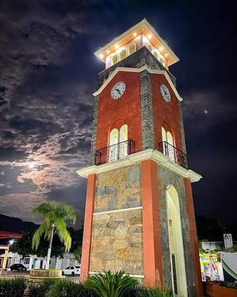
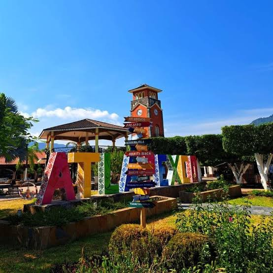
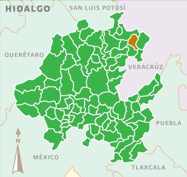
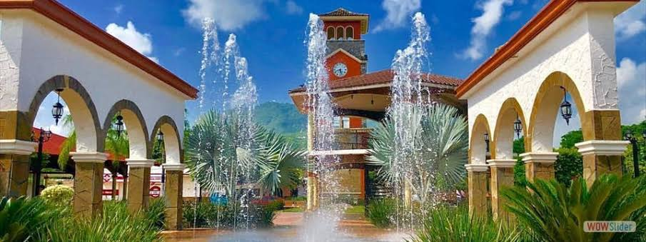
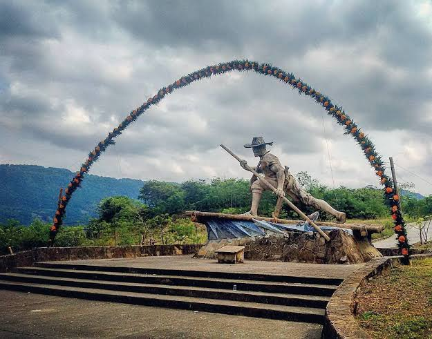
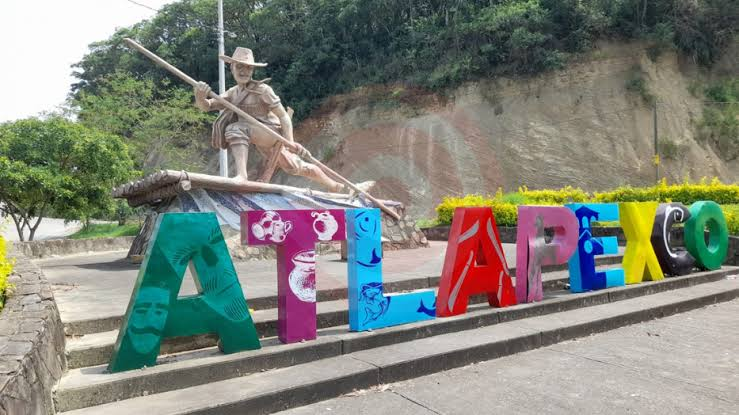
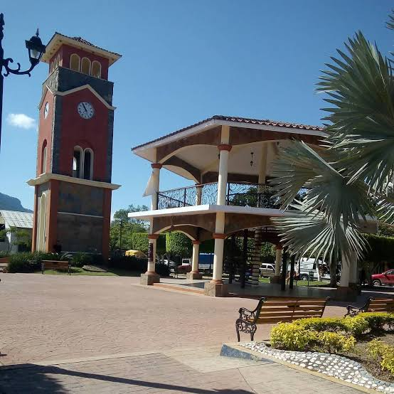
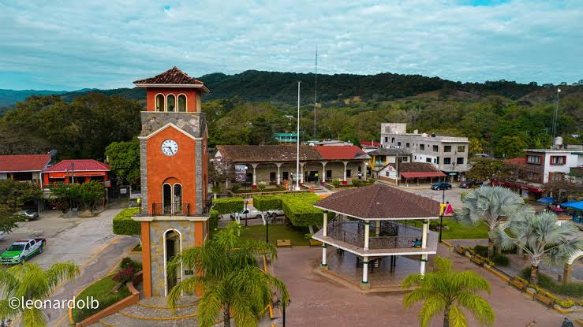

| Lugar | Descripción | Imagen |
|---|---|---|
| Parroquia de San José | Templo emblemático |  |
| Reloj Monumental | Símbolo del municipio |  |
| Kiosko | Lugar de convivencia |  |
| Parque Principal | Jardín central |  |
| Presidencia Municipal | Edificio representativo |  |
| Río Atlapexco | Atractivo natural |  |
| Teatro del Pueblo | Eventos culturales |  |
| Galera Pública Municipal | Eventos comunitarios |  |